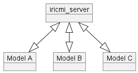
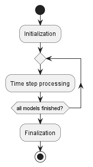
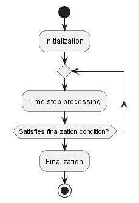

The workflow of iricmi_server and models
This section explains the workflow how iricmi_server and models that implement iRIC-MI library works, to synchronize each other, and send or receive data.
How they communicate
The feature is that the models do not communicate each other directly, but it always communicate through iricmi_server.

This architecture is the key of the flexibility of iRIC-MI framework. It realize mutual communication between models without dead lock, and handling models running with different delta t values.
iricmi_server
Overview
The workflow consists of the steps below:
Initialization
Time step processing
Finalization

Initialization
The tasks below are done in the initialization step:
Loading information about models
Initializing MPI to communicate with models
Exchanging data with models
Loading information about models
iricmi_server loads information about models in the steps below:
Loading iricmi_project.xml
Loading project.xml, definition.xml, and Case1_input.cgn
Loading iricmi_project.xml
Loads iricmi_project.xml to reads information about models and connections. Listing 16 shows an example of iricmi_project.xml.
The “name” attribute of <Model/> elements (in this case “global_send_c++” and “global_receive_c++”) are the name of subfolders in the project folder.
The subfolders are expected to be iRIC project folders, that contains information that each model needs for running.
1<iRICMIProject>
2 <Models>
3 <Model name="global_send_c++" nodes="1" />
4 <Model name="global_receive_c++" nodes="1" />
5 </Models>
6 <Connections>
7 <Connection>
8 <From model="global_send_c++" type="global" name="discharge" />
9 <To model="global_receive_c++" type="calculationCondition" name="discharge" />
10 </Connection>
11 </Connections>
12</iRICMIProject>
Please refer to Preparing iricmi_project.xml about the information defined in iricmi_project.xml.
For each subfolders referred in <Model/> element in iricmi_project.xml, do the next step.
Loading project.xml, definition.xml, and Case1_input.cgn
As written above, subfolders referred in iricmi_project.xml are expected to be iRIC project folders, and project.xml and Case1.cgn to be there.
When iricmi_server and models are launched,
the models copy Case1.cgn to Case1_input.cgn, and iricmi_server opens Case1_input.cgn in read only mode.
iricmi_server reads project.xml, definition.xml, and Case1_input.cgn in the steps below:
Loads project.xml in the subfolder. Listing 17 shows an example of project.xml.
It actually contains much more information than shown below, and the information
ignored by iricmi_server is omitted.
1<?xml version="1.0" encoding="UTF-8"?>
2<iRICProject solverName="global_send_c++" solverVersion="1.0">
3 (omitted)
4</iRICProject>
iricmi_server reads “solverName” and “solverVersion” attribute of <iRICProject/> element, to know
which model the data in the subfolder is prepared for.
Then, iricmi_server scans the “solvers” and “private/solvers” subfolder in the path referred by “IRICMI_ROOT_PATH” environmental variable.
Each subfolder in “solvers” is expected to contains “definition.xml”, model executable, and DLLs needed to run the model.
iricmi_server reads “definition.xml” in each subfolder, and tries to find the file that coinsides with the project.xml.
Listing 18 shows an example of definition.xml (some information ignored by iricmi_server is omitted).
iricmi_server reads “name” and “version” attributes of <SolverDefinition/> element. If they are equal to the values of
“solverName” and “solverVersion” in project.xml, it is recognized to be the model for the project.
1<?xml version="1.0" encoding="UTF-8"?>
2<SolverDefinition
3 name="global_send_c++"
4 version="1.0"
5>
6 <CalculationCondition>
7 </CalculationCondition>
8 <GlobalOutput>
9 <Output name="discharge" caption="Discharge">
10 <Definition valueType="real" />
11 </Output>
12 </GlobalOutput>
13</SolverDefinition>
Then, iricmi_server allocates memory to store data exchanged between models.
The data to be exchanged is the data referred in <Connection/> element in iricmi_project.xml, shown in numref:iricmi_project_example.
If it is a global value, the memory to allocate is very small (it actually is a single scalar value).
If it a grid attributes, iricmi_server reads Case1.cgn, to know the size of grids, and
allocate memory to store the values of grid attribute (or output) defined at nodes, cells, or edges.
Initializing MPI to communicate with models
iricmi_server calls MPI_Init() to initialize MPI, and then set up communicators.
This makes it possible to communicate with each models running in the project individually in the following steps.
Exchanging data with models
Exchange data with all models, so that all models are initialized appropriately.
This process consists of the steps below:
Receiving data from models
Copying values from “output” to “input”
Sending data to models
Receiving data from models
Receives the values below from the model:
\(T\) (Time)
\(DT\) (Exchange interval)
In most cases, \(T = 0\), and \(DT\) is equal to the delta t of the model.
Then, iricmi_server asks if the model created a new grid, or changed grid coordinates.
If new grid is created, or grid coordinates are changed, iricmi_server receive the data first.
Then, iricmi_server checks the <From/> element in iricmi_project.xml, to know
the values to receive.
For example, in case of Listing 16, iricmi_server needs to
receive “dischange” value from “global_send_c++” model.
iricmi_server communicates with the model in the following steps:
Sends the list of the data that model should send.
Receives the data from models.
Copying values from “output” to “input”
Copy value from “output” to “input” inside iricmi_server.
Copying is done based on information in <Connection/> element in iricmi_project.xml, to copy data from <From/> to <To/>.
For data with single value (calculation condition, global output, etc.), actually the memory to store the data is shared, so no copying is needed.
For data defined at grid nodes, cells or edges, the data is copied.
It can happen that data is copyed between grids with different coordinates (for example data can be copyed between grid with cartesian coordinates, grid with boundary-fitted coordinates, or unstructured grid). In such cases, mapping (interpolation) is executed.
Please refer to Mapping grid attributes values for detail.
Sending data to models
iricmi_server checks the <To/> element in iricmi_project.xml, to know
the values to send.
For example, in case of Listing 16, iricmi_server needs to
send “dischange” value to “global_receive_c++” model.
iricmi_server communicates with model in the following steps:
Sends the list of the data that model should receive.
Sends the data to the model.
Note
It is important for good performance that iricmi_server and models exchange data that
they really needs.
As explained above, iricmi_server recognize the data to exchange based on the definitions
of connections. It means that it is no problem that the models define many inputs and outputs,
that are not used in most cases. It doesn’t cost (cause iricmi_server to use a lot of memory).
Time step processing
Tasks below are done in the “time step processing” step:
Deciding with which model to communicate
Exchanging data with models
Deciding with which model to communicate
Calculate \(NT = T + DT\) for each model (\(NT\) stands for “next T”), and calculates \(NT_{min} = \min \{NT\}\).
Then, iricmi_server decide to communicate with models with \(NT\) value smaller than
\(NT_{min} + T_{delta}\), considering truncation error.
Currently, \(T_{delta}\) is hard coded to be 1.0E-6.
Exchanging data with models
This process consists of the steps below:
Receiving data from models
Copying values from “output” to “input”
Sending data to models
Receiving data from models
Receives \(T\) and \(DT\), just like in the initialization step.
If \(DT = 0\), it means that the model entered finalization process. In that case, skip the following steps, and marks that the model is finished.
Note
It can happen that the acutual \(T\) value of the model is different from \(NT\) calculated above. For example, with models that adopt variable \(DT\).
There is no problem with such cases.
Then, iricmi_server asks if the model created a new grid, or changed grid coordinates.
If new grid is created, or grid coordinates are changed, iricmi_server receive the data first.
Next, iricmi_server checks the <From/> element in iricmi_project.xml, to know
the values to receive from the models.
To achieve good performance, this step is different from that in initialization step.
iricmi_server recognizes that the value of <From/> element should be received, if that
satisfies one of the conditions below:
\(NT_{from} < NT_{to}\) and \(NT_{to} < NT_{from} + DT_{from}\). \(NT_{from}\) is \(NT\) of the model in <From/> element, \(NT_{to}\) is \(NT\) of the model in <To/> element, and \(DT_{from}\) is \(DT\) of the model in <From/>. It means that the model in <To/> element will need the value of the model in <From/> element in the next step.
\((T - T_{previous}) / DT_{previous} > r_{overshoot}\). It means that actual \(DT\) for the model was much larger than declared in the last step, and model overshooted the other models. Currently \(r_{overshoot}\) is hard coded to be 1.5.
After recognizing the values to received, iricmi_server recieve data just like in
initialization step, with the following steps:
Sends the list of the data that model should send.
Receives the data from models.
Copying values from “output” to “input”
Copy value from “output” to “input” inside iricmi_server.
This process is identical to that in the initialization step.
Sending data to models
iricmi_server checks the <To/> element in iricmi_project.xml, to know
the values to send to the models.
To achieve good performance, this step is different from that in initialization step.
iricmi_server recognizes the the value of <To/> element should be sent, if that
satisfies the condition below:
The value of \(T_{to}\) that the model passed to
iricmi_serverwhen it previously communicated, is smaller than the value of \(T_{from}\) when the model in <From/> element sent the value.
After recognizing the values to send, iricmi_server send data just like in initialization step,
with the following steps:
Sends the list of the data that model should receive.
Sends the data to models.
iricmi_server repeats this step, until all models are marked to be finished.
Note
The logic above make it possible that iricmi_server communicate with models
that run with different exchange interval, stably.
There is no problem to make connection in both way.
Please refer to Examples of sequences to exchange data, to more deeply understand
how iricmi_server exchange data with models.
Finalization
The tasks below are done in the finalization step:
Synchronize with all models by calling
MPI_Barrier().Finalize MPI, by calling
MPI_Finalize().
Models
Overview
The workflow consists of the steps below:
Initialization
Time step processing
Finalization

In most solvers, “End time” is defined as calculation condition, and if “Time” exceeds “End time”, solver goes to finalization process.
Initialization
The tasks below should be done in the initialization step:
Initializing iricmi library
Registering memory address to iricmi library
Exchanging data with other models through
iricmi_server, and outputting initial condition
Initializing iricmi library
The model calls iRICMI_Model_Init().
iRICMI_Model_Init() internally do the followings:
Checking the mode
Initializing MPI to communicate with
iricmi_serverCopy Case1.cgn to Case1_input.cgn
Loading information about the model
Opening Case1.cgn for modifying
Changing current directory when running in “coupled” mode
Checking the mode
Check if the model is running in “standalone” mode or in “coupled” mode.
Try to find iricmi_project.xml, and if it exists, iRIC-MI library recognize that the model is running in “coupled” mode. If not, “standalone” mode.
Initializing MPI to communicate with iricmi_server
It is similar to the step done in iricmi_server.
iRICMI_Model_Init() calls MPI_Init() to initialize MPI, and then set up communicator to
communicate with iricmi_server.
Copy Case1.cgn to Case1_input.cgn
Copy Case1.cgn to Case1_input.cgn.
Note
The reason to copy is that iricmi_server and the models both needs to
read the information in Case1.cgn.
To safely access the information in Case1.cgn, the model copies Case1.cgn to
Case1_input.cgn, and both iricmi_server and model
open Case1_input.cgn in read only mode.
Loading information about the model
It is similar to the step done in iricmi_server.
It loads iricmi_project.xml (only in “coupled mode”), project.xml, definition.xml, and Case1_input.cgn, to prepare the container to regester the pointer of the memory that is allocated by the model.
Opening Case1.cgn for modifying
iRIC-MI output calculation results to Case1.cgn.
For that purpose, iRICMI_Model_Init() opens Case1.cgn in modify mode.
Changing current directory when running in “coupled” mode
When running in “coupled” mode, change current directory to the project folder for the model.
Please note that in “standalone” mode, when the model is launched, the current directory is the project folder, and in “coupled” mode, the current directory is the “root folder”.
Because of the difference, without changing the current directory, if the model outputs files to the current directory, depending on the mode, the file will be saved to different directories.
To avoid the confusing situation, iRIC-MI library automatically change the current directory,
so that after calling iRICMI_Model_Init(), the current directory is the project folder.
Registering memory address to iricmi library
The model should register the pointers of the memory that should be used to
receive or send data from / to iricmi_server.
Model developers can use iRICMI_RIn_xxx or iRICMI_ROut_xxx for this purpose. Please refer to
Functions for registering pointers for detail.
At least, model developers should call the three functions below:
iRICMI_ROut_Time()iRICMI_ROut_Exchange_Interval()iRICMI_ROut_Dump_Interval()
In the following sections, the values in the variables registered with the functions above are referred as \(T\), \(DT\), \(DT_{dump}\) for each.
Exchanging data with other models through iricmi_server, and outputting initial condition
The model should call iRICMI_Model_Sync(). This function call will make the model
exchange data with iricmi_server in the initialization step.
iRICMI_Model_Sync() internally do the followings:
Sends data to
iricmi_serverReceives data from
iricmi_serverStores information about the communication with
iricmi_serverOutputs initial condition to Case1.cgn
Stores information about outputting
Sends data to iricmi_server
The model sends \(T\) and \(DT\) to
iricmi_server, from the memory address registered withiRICMI_ROut_Time()andiRICMI_ROut_Exchange_Interval().The model sends data to
iricmi_server, with the following steps:
Receive the list of the data that model should send.
Sends the data to
iricmi_server.
When sending data, iRIC-MI library reads data from the memory address registered with iRICMI_ROut_xxx().
Receives data from iricmi_server
The model receives data from
iricmi_server, with the following steps:
Receives the list of the data that model should receive.
Receives the data from
iricmi_server.
When receiving data, iRIC-MI library writes data to the memory address registered with iRICMI_RIn_xxx().
Stores information about the communication with iricmi_server
Stores the value of \(T\), as \(T_{last\_sync}\), that means “time that the model communicated with server last time”.
Outputs initial condition to Case1.cgn
Outputs the initial condition to Case1.cgn.
When outputting data, iRIC-MI library reads data from the memory address registered with iRICMI_ROut_xxx().
Note
When the model developer want to control the timing to output calculation result to Case1.cgn, please do the followings:
Register the variable to store dump interval using
iRICMI_ROut_Dump_Interval(), and stores negative value to the variable, for example, -1.At the timing to output calculation result, call
iRICMI_Model_Dump().
Stores information about outputting
Stores the value of \(T\) as \(T_{last\_dump}\), that means “time that the model output the result last time”.
Time step processing
In each time step in the loop, the model should do the following tasks:
Calculating the values at the next time step
Updating the value of time in the variable that the model registered with
iRICMI_ROut_Time()Calling
iRICMI_Model_Sync()
iRICMI_Model_Sync() internally do the followings:
Checking condition if the model should communicate with
iricmi_serverSending data to
iricmi_serverReceiving data from
iricmi_serverStores information about the communication with
iricmi_serverChecking condition if the model should output result to Case1.cgn
Outputting initial condition to Case1.cgn
Storing information about outputting
The steps other than 1 and 5 are the same to those in the initialization step.
The logic in step 1 and 5 are described below:
Checking condition if the model should communicate with iricmi_server
Check if the condition below is satisfied.
If not satisfied, iRIC-MI library decides that the model does not need to
communicate with iricmi_server, and skips step 2 to 4.
Note
For example, when the delta t of the model is very small, it is efficient that
the model passes DT value larger than the delta t, to avoid communicating
with iricmi_server too often.
Checking condition if the model should output result to Case1.cgn
Check if the condition below is satisfied.
If not satisfied, iRIC-MI library decides that the model does not need to output calculation result, and skips step 6 and 7.
Finalization
The model should call iRICMI_Model_Terminate().
iRICMI_Model_Terminate() internally do the followings:
Close Case1.cgn.
Deletes Case1_input.cgn.
Overwrite \(DT\) value to 0, and sends \(T\) and \(DT\) to
iricmi_server.Synchronize with
iricmi_serverand all other models by callingMPI_Barrier.Finalize MPI, by calling
MPI_Finalize().